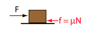
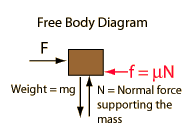

In the standard model of friction, the frictional resistance is given by the coefficient of friction times the normal force.

For this case the normal force is just the weight of the object.
|
Application of Newton's second law to a single mass.
|